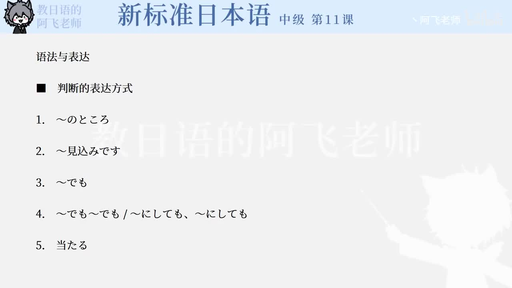

Bilibili P153 · Reading Text
漫画とアニメ
从外国人看到成年人读漫画的惊讶，讲到日本漫画的年龄分层、电视动画的发展、数字技术和《千与千寻》的世界评价。
全篇听力精讲
按 12 句说明文轮播。每句依次播放原句、中文意思、结构、断句、语法和词汇。
这篇文章在讲什么
漫画读者很广从儿童向到成人向，甚至公司生活和经济题材也很多。
作品跨年龄受欢迎《蜡笔小新》《哆啦A梦》等不只孩子喜欢，大人也喜欢。
动画技术进化从《铁臂阿童木》到数字技术和《千与千寻》的世界评价。
文章推进链
1 · 现象成年人读漫画
2 · 分类年代ごと
3 · 动画化テレビアニメ
4 · 技术デジタル技術
5 · 世界评价高く評価
逐句精读
重点语法与说明文表达
核心词汇
练习与复习
来源说明：视频标题、时长、CID 和首帧来自 Bilibili 公开视频接口；课文原文依据本地《新标准日本语》中级上册第11课图片页人工整理。